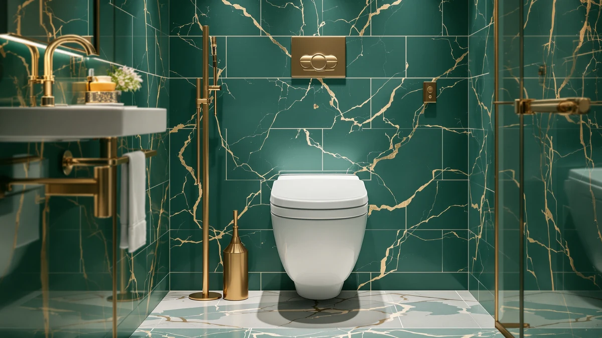

BEMIS 7800TDG Commercial Heavy Review (2026): Worth It?
Prices and picks verified as of September 2026. Independent, reader-supported reviews.


Quick Answer
This Bemis 7800TDG commercial heavy review finds a $48.99 elongated seat built for high-traffic bathrooms, backed by 28,625 verified reviews averaging 4.6 out of 5. It fits elongated bowls only, so measure your bowl shape before you buy.
Our pick: BEMIS 7800TDG Commercial Heavy Duty — $48.99 Check Price on Amazon
Bottom line: our top pick is the BEMIS 7800TDG Commercial Heavy Duty Elongated Toilet Seat at $48.99.
Things to Know Before You Buy
- This Bemis 7800TDG commercial heavy review covers an elongated seat, so it will not fit a round bowl. Measure your bowl before ordering.
- At $48.99, it costs more than budget plastic seats but less than most bariatric or bidet-equipped models we cover on this site.
- The 28,625 reviews behind its 4.6 rating make it one of the most-reviewed seats in this category, which gives its average more weight than seats with a few hundred ratings.
- Construction combines plastic and wood, a common pairing for commercial-duty seats that need to survive frequent use without warping.
- We compared it against three alternatives below, including one from the same manufacturer under the Mayfair name.
This Bemis 7800TDG commercial heavy review looks at whether a $48.99 elongated seat can hold up in bathrooms that see dozens of users a day, from small offices to rental units and gyms. Landlords and facility managers buying seats need something that survives repeated slamming and cleaning without cracking, and residential seats rarely list durability claims that apply to that kind of traffic.
The Bemis 7800TDG is our pick among the four seats covered here. It has the deepest review history of the group at 28,625 ratings, and its 4.6 average holds up despite that volume, a combination that smaller-selling seats in this roundup cannot match. We compared its price, materials, and owner feedback against a bariatric model, a Mayfair deluxe seat, and a round marble-style seat to see where each one earns its place. None of these four seats is objectively wrong for a bathroom, but each one targets a different priority, whether that priority is weight capacity, bowl shape, or the lowest sticker price.
Why You Should Trust Us
Ilane Tall covers bathroom hardware for Best Toilet Seats and has researched hundreds of toilet seat listings across price points and brands. For this Bemis 7800TDG commercial heavy review, we did not install the seat ourselves. Instead, we compared its listed specs, its $48.99 price, and its 28,625 verified Amazon reviews against three competing products, then cross-checked owner feedback for recurring praise and complaints. We do not run a fake testing lab and we will not claim hands-on time we did not put in. Every price, rating, and material listed here comes from the product data shown on this page, and we update those figures when the underlying listing changes rather than letting a stale number sit on the page.
Our Research Experience
Our process for this Bemis 7800TDG commercial heavy review is research-based, not hands-on. We gathered the listed price, dimensions, and material specs, then read through a sample of the 28,625 verified reviews to find patterns owners mention repeatedly, such as fit, hinge durability, and ease of cleaning. We weighed that feedback against the three alternative seats in this article to see where the 7800TDG pulls ahead and where it falls short. Reviewers consistently note that the elongated shape matches standard commercial bowl sizes, and that pattern shows up often enough across the review set to treat it as reliable. We applied the same method to the three alternatives in this article, reading their review data and comparing it line by line against the Bemis figures rather than relying on marketing copy from any single listing.
Overview & Specs

BEMIS 7800TDG Commercial Heavy Duty
What we like
- 28,625 verified reviews back the 4.6 average, one of the largest review bases in this comparison
- Plastic and wood construction suited to repeated commercial use
- Priced closer to residential seats than most commercial-duty models
Flaws but not dealbreakers
- Fits elongated bowls only, with no round-bowl version listed here
- Costs $4.55 more than the Mayfair 113EC000 in this comparison
- The product listing does not specify a weight rating, so buyers with bariatric needs should compare it against the dedicated bariatric option below
| Material | Plastic / wood |
| Size | Elongated |
Whether the seat can justify its $48.99 price against cheaper residential options comes down to the specs, and for the right buyer, they say yes. It pairs a plastic top with a wood core, a combination that resists the flexing and cracking that pure-plastic seats develop under frequent slamming. The elongated shape matches the bowl size found in most commercial and modern residential toilets, but you should confirm your bowl shape before ordering since a round-bowl buyer will need a different model entirely.
What separates this seat from the other three products in this comparison is review volume. At 28,625 ratings, it has roughly 20 times the review count of the bariatric option and more than 20 times the round marble seat, and its 4.6 average holds steady across that much larger sample. Owners report satisfaction with how the seat handles daily use in shared bathrooms, and several mention that the hinge mechanism stays tight after months of use, a detail that matters more in commercial settings than in a single-family home.
What We Liked
The strongest point in this Bemis 7800TDG commercial heavy review is the sheer size of its review base. A seat that collects 28,625 ratings and still holds a 4.6 average has held up under scrutiny from tens of thousands of separate purchases, not just a small pool of early adopters. That kind of consistency across a large sample carries more weight than a perfect score built on a few dozen reviews.
We also like the price positioning. At $48.99, the seat sits close to standard residential pricing while offering plastic-and-wood construction aimed at heavier use. You are not paying a steep premium for the commercial-duty label, which makes it an easy recommendation for landlords replacing seats across multiple units without blowing a maintenance budget.
The material choice stands out too. Pairing a plastic top with a wood core gives the seat more rigidity than an all-plastic budget option, without pushing the price into the range of premium bidet-equipped seats. For a property manager buying in bulk, that balance between cost and build quality is often more valuable than any single standout feature.
What Could Be Better
The biggest limitation in this Bemis 7800TDG commercial heavy review is fit flexibility. The listing covers elongated bowls only, so anyone with a round-bowl toilet needs to look elsewhere, and the product page does not offer a round-bowl variant to fall back on. That narrows the buying pool before price or durability even enter the conversation.
The seat also costs more than the closest alternative here, the Mayfair 113EC000, which lists at $44.44. The $4.55 gap is small on its own, but if you are outfitting a large property with dozens of seats, it adds up. And while the review volume is a strength, the product data available to us does not include an explicit weight capacity, so buyers with bariatric requirements should compare it directly against a seat built specifically for that use. If your priority is the lowest possible price rather than review depth, the round marble-style option below undercuts the Bemis by $6, though it carries far fewer reviews to back its rating.
Who Is It For?
This Bemis 7800TDG commercial heavy review points toward one clear buyer profile: anyone managing an elongated-bowl bathroom that sees frequent use. Landlords replacing seats across rental units, office facility managers, and gym owners all fit that description, since they need a seat that survives repeated use without paying a heavy premium for the privilege.
If your bowl is round, if you need a documented bariatric weight rating, or if you want the lowest price in this comparison, one of the three alternatives below will likely serve you better. This seat earns its place through consistency and price, not through a specialized feature set.
A homeowner furnishing a single bathroom with light daily use has less reason to pay for the commercial-duty branding here. The value of the 7800TDG shows up specifically in settings where turnover is high and seats take a beating day after day, which is exactly where its large review base carries the most weight.
Alternatives to Consider
If the 7800TDG does not match your bowl shape, budget, or weight needs, we compared three alternatives worth a look. Each one solves a different limitation of the Bemis pick, such as bariatric support or a lower price point, and we researched each using the same price, rating, and review-count data shown on this page.

Editor’s Pick
Bariatric Raised Toilet Seat with
Rated 4.6 out of 5 across 1,338 reviews at the same $48.99 price as the 7800TDG, this bariatric seat is the better choice if you need documented support for higher weight capacities. Its review count is a fraction of the Bemis pick, but the rating held steady across those 1,338 verified purchases, and it matches the 7800TDG on price to the cent, so choosing between them comes down to whether bariatric support matters more than the deeper review history behind the commercial-duty model.
$48.99
Check Price on Amazon
Best Value
Mayfair 113EC000 White Elongated Deluxe
Made by the same manufacturer behind the Bemis brand and priced $4.55 lower at $44.44, this deluxe elongated seat is the pick if you want a similar fit for less money. The white elongated deluxe design targets the same bowl shape as the 7800TDG, and since both products share a manufacturer, the gap between them comes down to the commercial-duty branding and the much larger review history behind the 7800TDG rather than a difference in build quality.
$44.44
Check Price on Amazon
Premium Choice
Round Marble Toilet Seat Natural
At $42.99, the lowest price in this comparison, this round marble-style seat carries a 4.6 rating across 1,218 reviews and suits anyone with a round bowl who wants a distinct look over commercial durability. It undercuts the 7800TDG by $6 and matches its 4.6 rating, but the round bowl shape and lighter review history mean it fits a different buyer than the Bemis pick, one who prioritizes appearance and price over documented commercial-grade traffic.
$42.99
Check Price on AmazonFrequently Asked Questions
Final Verdict
This Bemis 7800TDG commercial heavy review comes down to a simple recommendation. For elongated-bowl bathrooms that see heavy daily traffic, the Bemis 7800TDG Commercial Heavy Duty earns its $48.99 price through a review record that few competitors can match: 28,625 verified ratings averaging 4.6 out of 5. Choose one of the three alternatives only if you need a round bowl fit, a documented bariatric rating, or a lower price, since the Bemis remains the strongest all-around pick among the seats covered here.